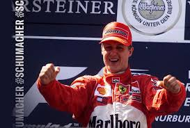
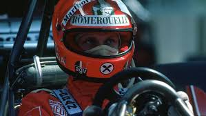
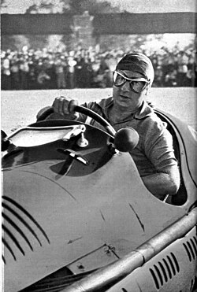
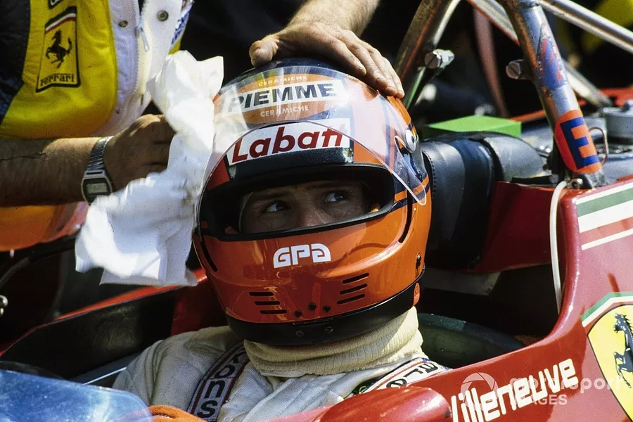
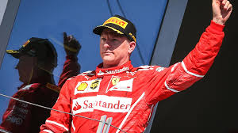

FERRARI F1 TIMELINE
1950s
The Beginning
- First F1 race: 1950 Monaco GP
- First win: 1951 British GP
- First Championship: 1952
125 F1 • 500 F2
1960s
Golden Era
- 6 Constructors' Championships
- Phil Hill: First American World Champion (1961)
- John Surtees: World Champion (1964)
156 Sharknose • 312
1970s
Niki Lauda Era
- Back-to-back Championships (1975, 1977)
- Lauda's incredible comeback
- 312 T series domination
312T • 312T2
2000s
Schumacher Dynasty
- 5 consecutive Constructors' titles (1999-2004)
- Michael Schumacher: 5 titles with Ferrari
- Most dominant era in F1 history
F2002 • F2004
LEGENDARY DRIVERS
The champions who defined Ferrari's legacy

1
Michael Schumacher
German
Years: 1996–2006
Championships: 5 (2000–2004)
Wins: 72
"When you start out in a team, you have to get the teamwork going and then it'll work."

2
Niki Lauda
Austrian
Years: 1974–1977
Championships: 2 (1975, 1977)
Wins: 15
"A race is won in the preparation, not on the track."

3
Alberto Ascari
Italian
Years: 1950–1954
Championships: 2 (1952, 1953)
Wins: 13
"The first Ferrari World Champion and the last Italian to win for Ferrari."

27
Gilles Villeneuve
Canadian
Years: 1977–1982
Championships: 0 (6 Wins)
Wins: 6
"He was the last great romantic driver, racing purely for the thrill."

7
Kimi Räikkönen
Finnish
Years: 2007–2009, 2014–2018
Championships: 1 (2007)
Wins: 10
"I know what I'm doing. You don't have to remind me every second."
BY THE NUMBERS
16
Constructors' Titles
244
Race Victories
808
Podium Finishes
73
Years in F1